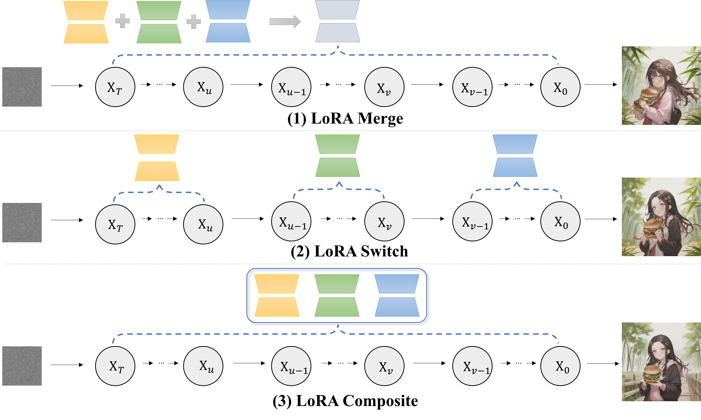
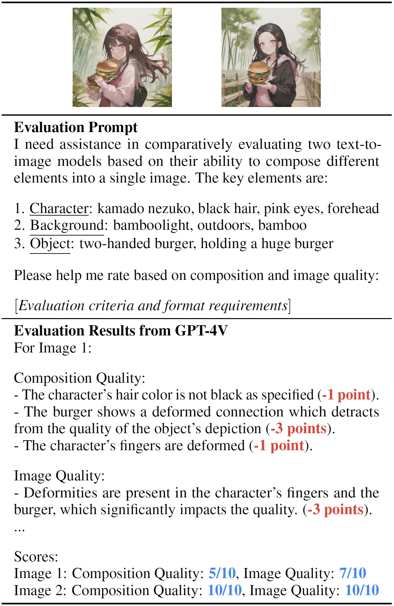
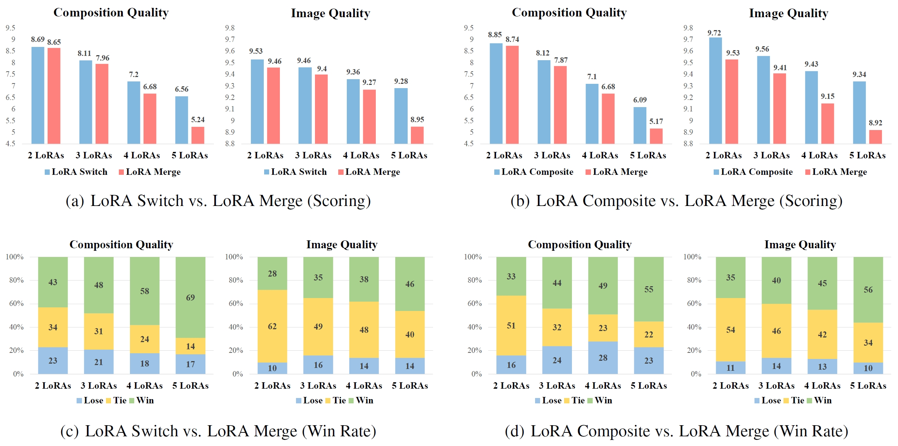
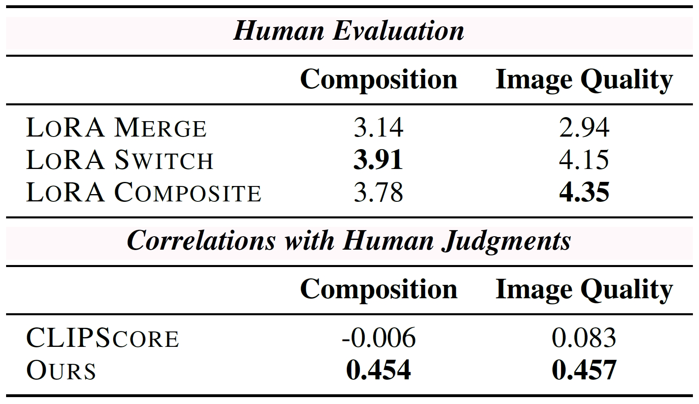
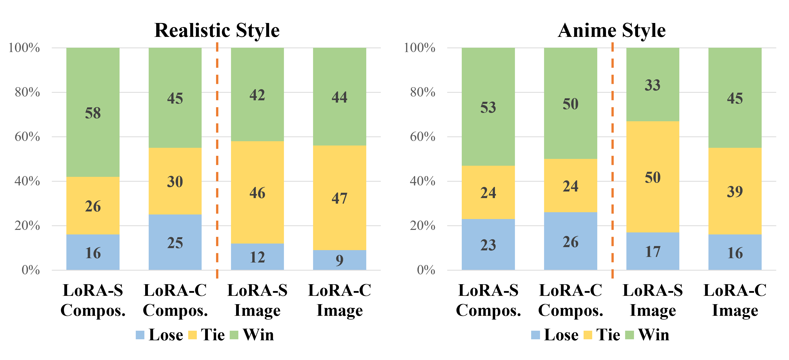
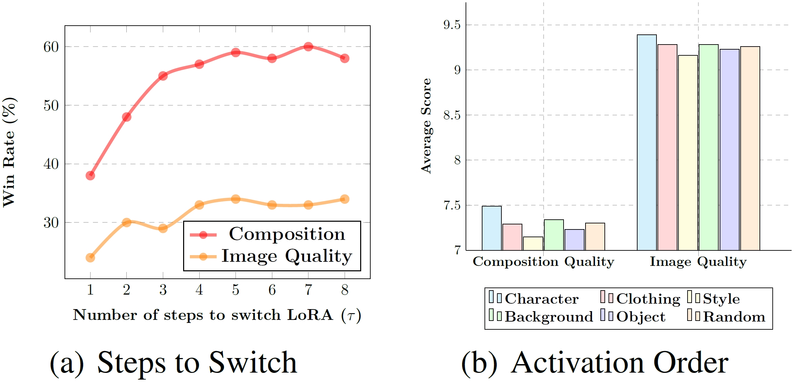
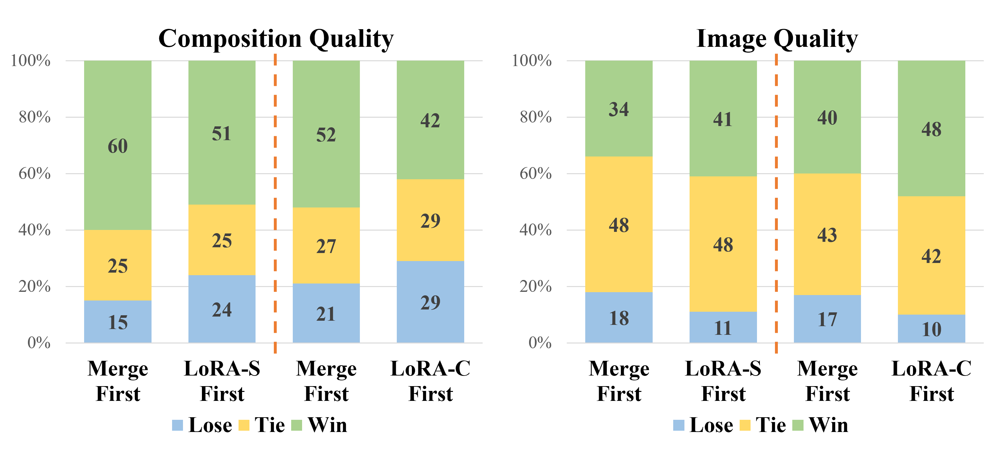

@article{zhong2024multi,
title={Multi-LoRA Composition for Image Generation},
author={Zhong, Ming and Shen, Yelong and Wang, Shuohang and Lu, Yadong and Jiao, Yizhu and Ouyang, Siru and Yu, Donghan and Han, Jiawei and Chen, Weizhu},
journal={arXiv preprint arXiv:2402.16843},
year={2024}
}